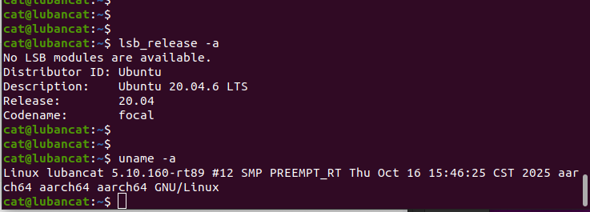
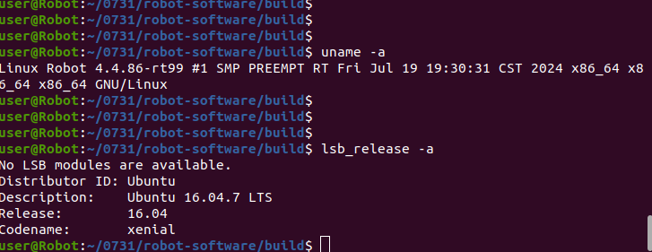

3.1 Принципы развертывания на роботе¶
Назначение¶
Этот раздел объясняет, что общего у развертывания на физическом роботе и симуляции MuJoCo, чем они отличаются и как между ними переключаться.
Общая логика¶
Симуляция и физический робот используют следующие общие компоненты:
- Основной контроллер.
- Режимы управления FSM, такие как
DAMP,RECOVERY_STAND,RL_WALK,RL_RUNиDEVELOPMENT. - Модели RL-политик и логика обработки наблюдений.
- SDK / WebRTC / внешние алгоритмы, отправляющие команды управления или команды режима разработки через LCM.
- Проверки безопасности, логирование и загрузка конфигурации.
Различия¶
| Пункт | Симуляция | Физический робот |
|---|---|---|
| Конфигурационный файл | config_sim.yaml |
config.yaml |
| Переключатель MuJoCo | simulation.enable_mujoco: true |
simulation.enable_mujoco: false |
| Связь с моторами | Каналы симуляции LCM | SPI / связь с физическими моторами |
| Источник данных | Данные суставов и IMU из MuJoCo | Реальные моторы, IMU, пульт управления, датчики |
| Риск | Ошибка программы или модели | Падение робота, столкновение, повреждение оборудования или травма |
Аппаратный путь данных контроллера¶
После аппаратного запуска контроллер не выбирает связь напрямую по имени робота. Он инициализируется послойно из конфигурации:
config.yaml
-> FSM_ConfigLoader
-> RobotRunner::init()
-> MotorCommunicationInterface
-> SPI/LCM motor state and commands
Симуляция использует config_sim.yaml с simulation.enable_mujoco: true; состояние моторов и команды проходят через LCM между bridge симуляции и контроллером. Физический робот использует config.yaml; MuJoCo отключен, SPI-устройства читают реальные состояния моторов и отправляют моторные команды, а IMU читается независимым serial-драйвером.
Архитектура аппаратной системы E15 / Y15¶
Следующие схемы показывают связь контроллера, плат SPI-связи, IMU, LCM / SDK и моторов при развертывании E15 и Y15. Узлы устройств, тип SPI и тип IMU нужно подтвердить на месте.
E15:


Y15:


Что такое SPI-узел¶
SPI-узел — это файл устройства Linux, например /dev/spidev3.0. Во время работы физического робота контроллер обменивается данными с платами связи моторов через два SPI-узла.
SPI-узлы являются результатом перечисления устройств операционной системой и аппаратной платформой. Это не модель робота, и их нельзя вывести только из архитектуры CPU. Неверные имена узлов, порядок узлов или права доступа могут помешать открытию SPI; даже если SPI откроется, неправильное сопоставление может вызвать аномальное состояние или направление суставов.
Проверьте номера устройств на целевой машине:
ls -l /dev/spidev*
Различия SPI между Y15 и E15¶
Y15 и E15 используют общую абстракцию суставов четвероногого робота, две SPI-платы и 12 интерфейсов команд суставов, но raw-формат SPI-кадра и нулевые смещения суставов отличаются. spi_type выбирает ветку протокола, структуру чтения, скорость SPI и смещения суставов.
Здесь Y15/E15 обозначает тип платы SPI-связи, а не псевдоним типа IMU. Код не выбирает HipNuc автоматически из-за spi_type: E15 и не выбирает Lord автоматически из-за spi_type: Y15. Выбор IMU независим и задается в блоке imu.
Разные IMU на Y15 и E15¶
Текущие аппаратные комбинации обычно используют MicroStrain IMU на Y15 и HipNuc IMU на E15. Их serial-протоколы, имена устройств, скорости передачи, форматы данных и обработка кватернионов различаются.
| Модель робота | Производитель IMU | Драйвер в коде | Значение конфигурации |
|---|---|---|---|
| Y15 | MicroStrain | LordImu / Lord driver |
imu.type: "lord" |
| E15 | HipNuc | Imu_data / HipNuc driver |
imu.type: "hipnuc" |
Рассматривайте аппаратные комбинации и программные поля отдельно. spi_type выбирает SPI-протокол моторов и преобразование суставов; imu.type выбирает драйвер производителя IMU. Первое не определяет второе.
Serial-настройки HipNuc и Lord нельзя смешивать. Для HipNuc port_base должен быть полным путем устройства; Lord и AHRS обычно используют префикс имени устройства плюс port_number.
Последовательность перехода от симуляции к роботу¶
- Проверьте модели, контроллер и внешние алгоритмы в MuJoCo.
- Подготовьте конфигурацию SPI и IMU для целевого робота.
- Передайте пакет развертывания на сторону робота.
- Проверьте аккумулятор, аварийную остановку, кабели, поверхность и безопасную зону.
- Запустите контроллер и постепенно переходите из безопасного режима к режимам движения.
- Во время работы записывайте журналы и наблюдайте состояние инструментами LCM.
Примечание по безопасности¶
Скрипты могут выбрать bin/ или bin_rk3588/ по архитектуре системы, но не могут автоматически определить реальную модель робота, тип SPI-платы или serial-порт IMU. Перед запуском вручную сверьте motor_communication.spi_type, SPI-узлы и конфигурацию imu в config.yaml с фактическим оборудованием.